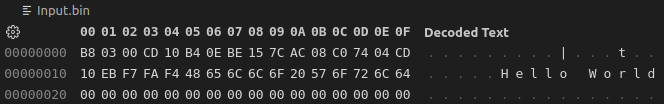
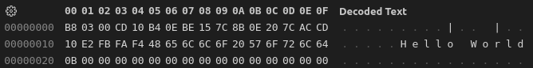

Now that our display is set, let's actually put a character on the screen. Here is the code:
mov ah, 0xE
mov al, "c"
int 10h
Pretty straight forward, it simply displays the character "c" at the current cursor position.
To work with a string we first need to store it somewhere in memory. Assembly is an "untyped" language which means that there are technically no types. We just work with raw memory addresses and have to keep track of what kind of data is located there for us. We use labels to help us keep track of a memory address by giving it a name. So here is an example of the string we have been waiting for.
helloString:
db "Hello World", 0
At the end of the string we have a null byte (0) so we know where our string ends, just like in C. If we construct a loop we will be able to loop through each character and display it on the screen.
use16
org 0x7c00
mov ax, 0x3
int 10h
mov ah, 0xE
mov si, helloString
characterLoop:
lodsb
or al, al
jz breakout
int 10h
jmp characterLoop
breakout:
cli
hlt
helloString:
db "Hello World", 0
times 510 - ($ - $$) db 0
dw 0xaa55
So let's break that down. We are setting `ah` to `0xE` like we have done before for displaying a character. Next we are using the register `si` which is the "string source index". We are telling it to look at the address of "helloString". Our next command is `lodsb` which is for loading a string byte into `al`. After this instruction, `al` will now contain "H" and `si` will point to helloString + 1. The `or` command is a fancy way of checking if `al` is 0, and if it is, it will set the zero flag. Next we jump to `breakout` if the zero flag is set, otherwise we display the character using `int 10h`. Then our loop will keep repeating just like a while(true) loop.
Since we are learning new things and there is always more than one way to program, let's look at another way to process this same string.
use16
org 0x7c00
mov ax, 0x3
int 10h
mov ah, 0xE
mov si, helloString
mov cx, [helloLength]
characterLoop:
lodsb
int 10h
loop characterLoop
cli
hlt
helloString:
db "Hello World"
helloLength:
db $ - helloString
times 510 - ($ - $$) db 0
dw 0xaa55
We almost have the same program here, but let's identify a couple of the differences. First when we look at `helloString` we see it is nolonger terminated with a null character (0). After this we have a new variable that has the length of our string. The way this is accomplished is if you remember the $ is our current address location, which is right at the end of our string. Essentially we are doing (currentAddress - startOfStringAddress) which gives us the length of the string.
Now when we look up higher we can see that we have our loop label, but this time right before it we are setting `cx` (our counter) to the value (not the address) of "helloLength". At the bottom of the loop you can see that we replaced our `jmp` with `loop`. It will automatically loop for us until `cx` is 0. Essentially we have replaced our while loop with a for loop.
Now which one uses less bytes because we only haver 510 bytes to work with? This first image is for the first program.
And the second program.
The second way takes one byte more! Also, at this point, you might have always wondered what on earth the use of looking at hexadecimal numbers are; you can officially say you have used it for something useful. Peering inside the hex file will continue to reveal secrets as we move forward.